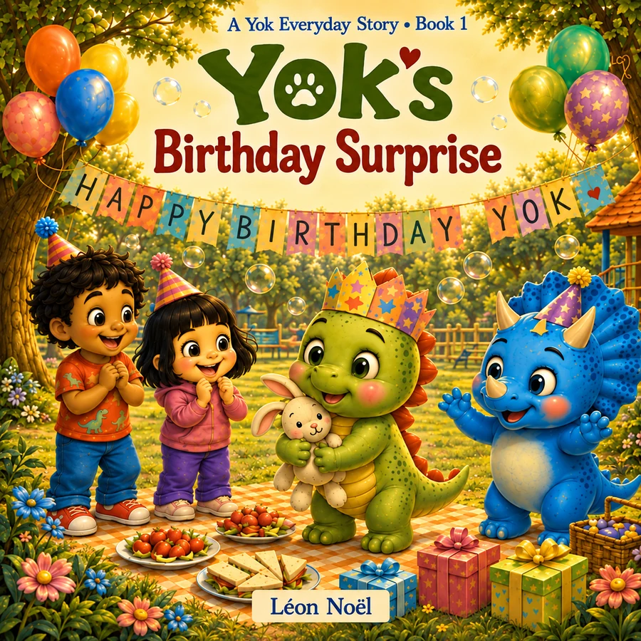

Yok Everyday Stories · Book 1
Yok’s Birthday Surprise
Yok expects an enormous birthday surprise, but rain changes the party and the gift is smaller than she imagined. With friends, music, a stubborn candle, and a handmade book of memories, Yok discovers that a meaningful surprise does not have to be enormous.
About the story
A birthday story about what happens when reality is smaller than the picture in your head.
Yok expects an enormous birthday surprise, but rain changes the party and the gift is smaller than she imagined. With friends, music, a stubborn candle, and a handmade book of memories, Yok discovers that a meaningful surprise does not have to be enormous.
This title belongs to Yok Everyday Stories, a six-book collection of gentle stories for young children and the grown-ups who read with them.
Why this story can help
A birthday story about what happens when reality is smaller than the picture in your head.
Rain changes the party and the expected surprise is not as enormous as Yok imagined. The story gives children room to feel disappointment first, then notice the people, music, memories, and connection that still make the day special.
Good for
- Birthday expectations
- Disappointment and changed plans
- Gratitude after big feelings
Looking for a screen-free follow-up? Download the free companion storytime kit →
Keep the story going
Free companion resource.
A printable read-aloud and conversation kit for home, classroom, or library use.
The Yok world